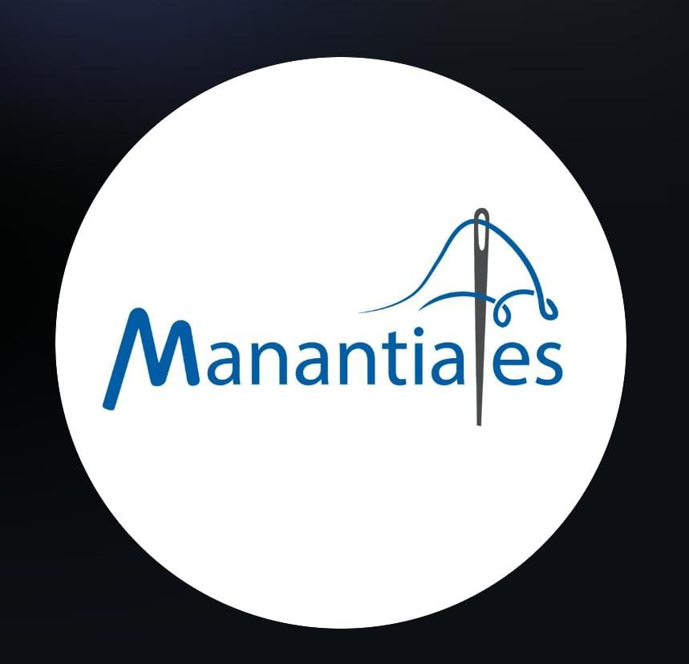
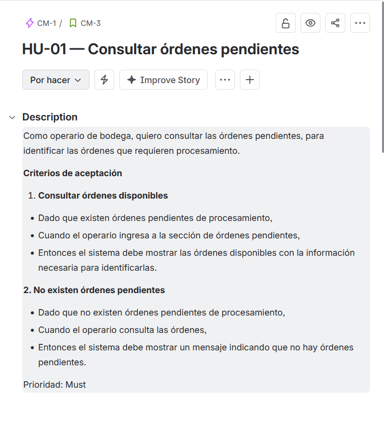
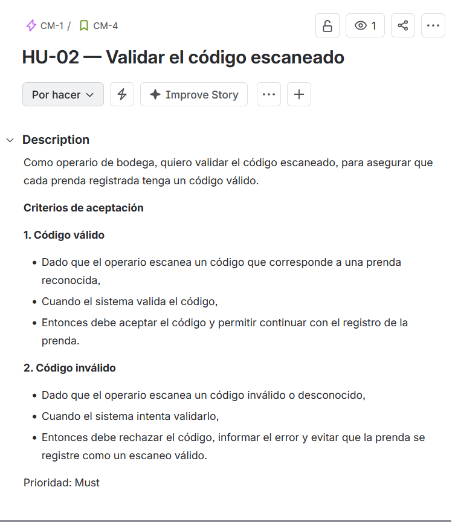
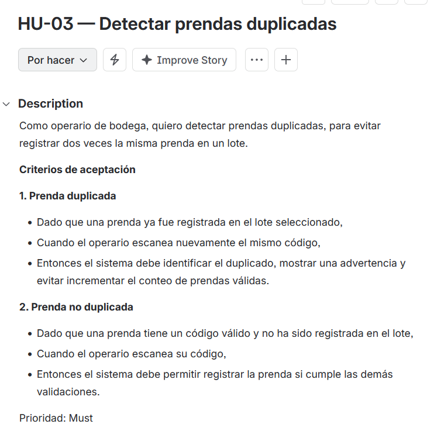
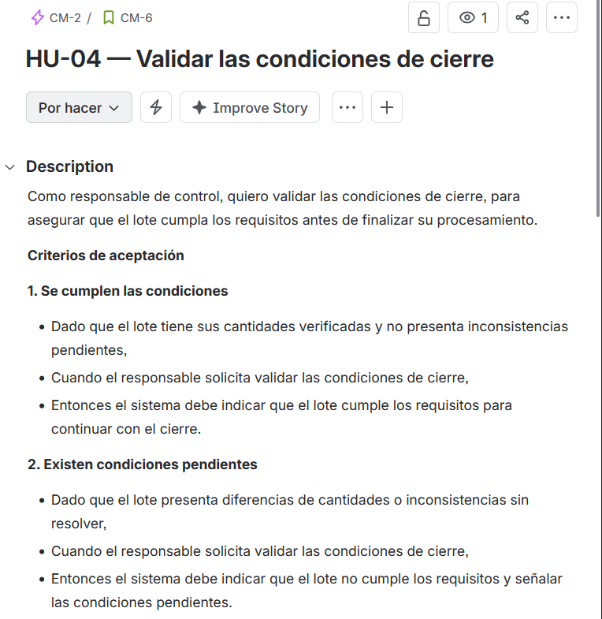
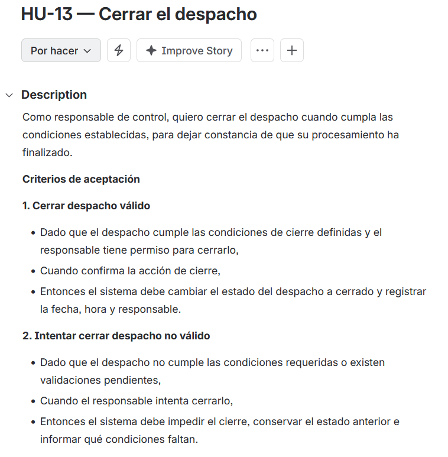
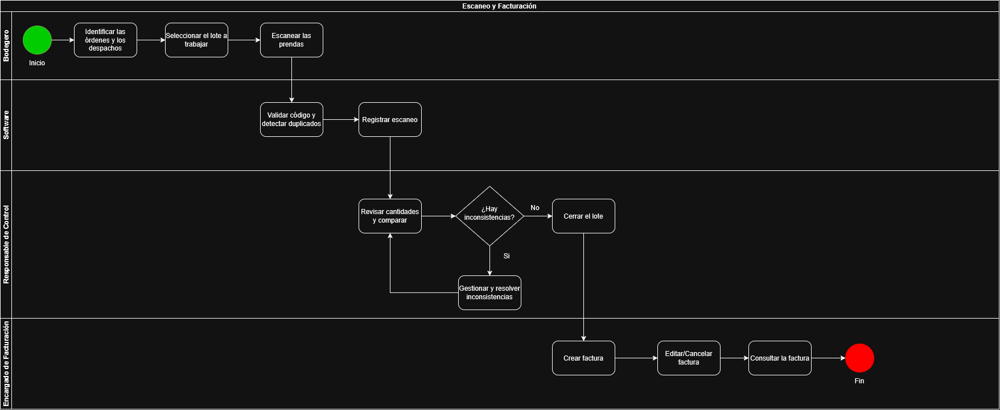

Problema refinado
DefiniciónEl servicio de escaneo y facturación de prendas (individuales y lotes) no está automatizado, por lo que debe hacerse a mano, teniendo consecuencias que afectan directamente a los intereses de la cooperativa.
Perfil institucional · Proyecto MVP
Un MVP para automatizar el escaneo de prendas y el control de lotes en la bodega: menos tiempo y menos errores.

La Cooperativa Manantiales nació en abril de 1998 con un espíritu de servicio y entrega a la comunidad. Soñábamos con ser una gran empresa confeccionista, pero el mercado nos llevó a los servicios: empezamos con la limpieza de huevos para la Empresa Avícola Nacional y crecimos con Colombiana Kimberly Colpapel y Corona, en labores de empaque y procesos logísticos.
En 2012 retomamos nuestro sueño y volvimos a la confección de ropa interior y exterior, tejido plano, tejido de punto y vestidos de baño, con clientes como Leonisa, Línea Directa, Stop, Matelsa y Maagic. En 2017 iniciamos el modelo de full pack y en 2018 logramos la codificación con Dietexco. Nuestro reto es seguir siendo líderes en productos de alta calidad, con clientes satisfechos y bienestar para nuestros asociados.
Qué situación queremos resolver y por qué ocurre.
El servicio de escaneo y facturación de prendas (individuales y lotes) no está automatizado, por lo que debe hacerse a mano, teniendo consecuencias que afectan directamente a los intereses de la cooperativa.
Cómo resolvimos el problema planteado.
Crear un software que automatice el proceso de escaneo y facturación de las prendas y las asigne al lote correspondiente, añadiendo herramientas útiles para los clientes. Para demostrarlo construimos un MVP: un programa en Python con el que el operario crea lotes, escanea prendas y cierra el lote solo cuando cumple exactamente lo que se pidió.
El operario escribe o escanea el código y el sistema responde al instante: acepta la prenda, la asigna al lote y muestra el avance (por lote y por tipo) con una barra de progreso.
El sistema rechaza códigos repetidos, tipos de prenda que el lote no pide y prendas de más. Los errores se detectan al escanear, no al final.
Cada lote define cuántas prendas de cada tipo necesita. No se puede cerrar hasta cumplir esas cantidades exactas, y una vez cerrado ya no se modifica.
| Situación | Antes (a mano) | Con el MVP |
|---|---|---|
| Registro de prendas | Se anota y se cuenta manualmente. | Cada prenda se registra con código, nombre y tipo, y se asigna al lote automáticamente. |
| Prendas duplicadas | Pueden pasar desapercibidas hasta el final. | Se detecta el código repetido en cualquier lote y se avisa en el momento. |
| Conteo por lote | Revisión manual de cantidades por tipo. | El sistema muestra escaneadas/requeridas por tipo y qué falta o sobra. |
| Cierre del lote | Depende de que alguien revise que todo esté bien. | Solo cierra si las cantidades son exactas; si no, indica qué condiciones faltan. |
Un programa de consola en Python, hecho con programación orientada a objetos y dividido en varios módulos. Se ejecuta con python main.py.
Se indica cuántas prendas de cada tipo (pantalón, camisa, falda, buzo) debe tener el lote.
Se escanea cada prenda con su código, nombre y tipo. El sistema la valida y la agrega al lote.
Se consulta el progreso, se editan o eliminan prendas y se revisa qué falta o sobra.
Con las cantidades exactas, el lote se cierra y queda bloqueado contra cambios.
1 Crear lote2 Escanear prendas3 Ver progreso4 Ver lotes abiertos5 Editar prenda6 Eliminar prenda7 Cerrar lote8 Lotes cerrados| Archivo | Clase | Qué hace |
|---|---|---|
main.py |
— | Punto de entrada: arranca el menú con el sistema de escaneo. |
menu.py |
MenuConsola |
Interfaz por consola: menús, validación de lo que escribe el operario, mensajes de error y barra de progreso. |
sistema_escaneo.py |
SistemaEscaneo |
Maneja todos los lotes, busca prendas por código para evitar duplicados y calcula el progreso general. |
lote.py |
Lote |
Guarda las prendas y las condiciones de cierre, controla los cupos por tipo y calcula diferencias (faltan/sobran). |
prenda.py |
Prenda |
Representa una prenda: código (identificador), nombre y tipo. |
tipos.py |
TipoPrenda |
Enumeración con los tipos: Pantalon, Camisa, Falda y Buzo. |
Estas son las historias que decidimos implementar y cómo se cubre cada una en el programa. Haz clic en una captura para verla en grande.

La opción 4 (Ver lotes abiertos) lista los lotes que aún necesitan procesamiento con su avance. Si no hay ninguno, muestra el mensaje «No hay lotes abiertos.».

Al escanear, el sistema rechaza códigos vacíos y normaliza el código (sin espacios y en mayúsculas) antes de aceptarlo. Si el código ya existe, no se registra como un escaneo válido.

El sistema busca el código en todos los lotes. Si ya existe, muestra una advertencia con la prenda y el lote donde está, no aumenta el conteo y deja elegir entre cancelar o reemplazar los datos de la existente. Si no existe, la prenda se registra normalmente.

Al intentar cerrar, el sistema compara lo escaneado contra lo requerido por tipo. Si todo cuadra, indica que el lote cumple las condiciones; si no, señala exactamente qué faltan y qué sobran (por ejemplo: «faltan 1 Pantalon, 1 Camisa»).

La opción 7 (Cerrar lote) valida las condiciones, pide confirmación y cambia el lote a cerrado, con lo que ya no se puede mover ni editar. Si no cumple, impide el cierre, conserva el estado y explica qué condiciones faltan.
Muestra el flujo natural de actividades en la cooperativa.


Muestra el flujo de actividades con la solución implementada.


El mapa de procesos muestra la manera en la que se organizan los procesos en la cooperativa.
Qué cambia entre el proceso actual y el proceso propuesto.
| Aspecto | As Is (actual) | To Be (propuesto) |
|---|---|---|
| Diagrama general | Diagrama actual sin modificaciones. | Diagrama con la solución implementada. |
| Subprocesos | Únicamente el de planta de producción. | Además del de planta de producción tiene el de escaneo y facturación. |
| Escaneo y facturación | Están separados en el diagrama general. | Integrado en un subproceso junto al software. |
Cooperativa Manantiales es una organización dedicada a la producción, ensamble, empaque y distribución de productos manufactureros, comprometida con las necesidades de nuestros clientes con altos estándares de calidad, asegurando la mejora continua, lo que garantiza nuestra permanencia en el mercado y el bienestar de nuestros asociados.
Ser reconocida en el año 2027 como una Cooperativa líder en el mercado, contando con un grupo de asociados calificados, dinámicos y competitivos a través de tecnología de avanzada y capacitación permanente. A la vez soportar nuestra gestión a través de procesos calificados, los cuales se convierten en herramientas orientadoras de apoyo para la planificación, ejecución, verificación y mejora continua de nuestros procesos.
Gestionar de manera eficiente los recursos que posee la empresa para poder mantener un equilibrio (76%) entre la producción y la facturación.
Aumentar la producción en un 15% para así superar la meta propuesta en un plazo máximo de tres meses.
Reducir los costos de producción aproximadamente en un 3% con el fin de alcanzar un equilibrio entre los gastos y la facturación, todo esto en un plazo de 6 meses.
Incrementar la mano de obra en las líneas de producción para generar más productividad sin aumentar los costos (aumenta, pero no significativamente), en un plazo de un año.
Debilidades y fortalezas vienen de dentro de la empresa. Amenazas y oportunidades vienen del entorno.
Fotos del equipo de producción e instalaciones.